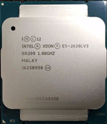
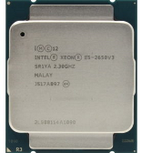
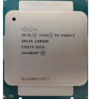
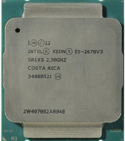
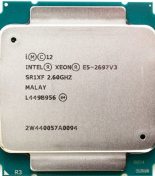

INTEL Xeon e5 2609 v3 — ничем не примечательный 6х-ядерник с заблокированным множителем, без турбобуста, и виртуальных ядер. может рассматриваться только как временное решение. покупать не рекомендуется от слова "совсем".
INTEL Xeon e5 2609 v3 — ничем не примечательный 6х-ядерник с заблокированным множителем, без турбобуста, и виртуальных ядер. может рассматриваться только как временное решение. покупать не рекомендуется от слова "совсем".
 INTEL Xeon e5 2620 v3 — бюджетный 6-ядерный процессор на архитектуре Haswell. Несмотря на достаточно скромные характеристики, может представлять интерес не только как временное решение, но и как недорогой игровой и мультимедийный вариант.
INTEL Xeon e5 2620 v3 — бюджетный 6-ядерный процессор на архитектуре Haswell. Несмотря на достаточно скромные характеристики, может представлять интерес не только как временное решение, но и как недорогой игровой и мультимедийный вариант.

INTEL Xeon e5 2630L v3 — самый слабый восьмиядерник в линейке. Помимо невысокой частоты, процессор выделяется низким TDP и весьма умеренным нагревом, что делает модель привлекательной для использования в медиа-приставках и бесшумных и компактных системах.
 INTEL Xeon e5 2630 v3 — недорогой восьмиядерный процессор на архитектуре Haswell. Сам по себе достаточно неплох, но не получил особого распространения ввиду наличия как более мощного Xeon E5 2640 v3, так и бюджетного Xeon e5 2620 v3. После анлока ТБ показывает производительность, близкую к топовыми AMD Ryzen II поколения.
INTEL Xeon e5 2630 v3 — недорогой восьмиядерный процессор на архитектуре Haswell. Сам по себе достаточно неплох, но не получил особого распространения ввиду наличия как более мощного Xeon E5 2640 v3, так и бюджетного Xeon e5 2620 v3. После анлока ТБ показывает производительность, близкую к топовыми AMD Ryzen II поколения.
 INTEL Xeon e5 2640 v3 — достаточно интересный бюджетный процессор для сокета 2011-3. Модель имеет 8 ядер, 16 потоков и не самую низкую частоту,благодаря чему может использоваться как недорогое игровое решение. После блокировки турбо-буста показывает более чем достойный уровень игровой производительности, сравнимый с топовыми AMD Ryzen второго поколенияя.
INTEL Xeon e5 2640 v3 — достаточно интересный бюджетный процессор для сокета 2011-3. Модель имеет 8 ядер, 16 потоков и не самую низкую частоту,благодаря чему может использоваться как недорогое игровое решение. После блокировки турбо-буста показывает более чем достойный уровень игровой производительности, сравнимый с топовыми AMD Ryzen второго поколенияя.

INTEL INTEL Xeon E5 2650 v3 — один из самых доступных десятиядерных процессоров в серии. Предназначен для профессиональных задач и работы с многопоточным софтом, но при необходимости может вполне неплохо справляться и с развлекательным контентом.

INTEL Xeon E5 2660 v3 — один из самых доступных десятиядерных процессоров в серии. Предназначен для профессиональных задач и работы с многопоточным софтом, но при необходимости может вполне неплохо справляться и с развлекательным контентом.

INTEL Xeon e5 2670 v3 — 12 ядерный процессор среднего уровня на архитектуре Haswell. Достаточно удачная модель в соотношении цена\производительность, но заметно уступает в популярности чуть более мощному Xeon e5 2678 v3.
 INTEL Xeon e5 2678 v3 — один из наиболее интересных 12-ядерных процессоров в серии. Даже в стоке он обеспечивает отличный уровень многопоточной производительности. Является практически копией E5 2680 v3, но в отличии от него умеет работать как с DDR4, так и с DDR3.
INTEL Xeon e5 2680 v3 — один из наиболее интересных 12-ядерных процессоров в серии. Даже в стоке он обеспечивает отличный уровень многопоточной производительности? практически аналог 2678v3, однако последний чуть дешевле и умеет работать с двумя типами памяти - ddr3 и ddr4.
INTEL Xeon e5 2678 v3 — один из наиболее интересных 12-ядерных процессоров в серии. Даже в стоке он обеспечивает отличный уровень многопоточной производительности. Является практически копией E5 2680 v3, но в отличии от него умеет работать как с DDR4, так и с DDR3.
INTEL Xeon e5 2680 v3 — один из наиболее интересных 12-ядерных процессоров в серии. Даже в стоке он обеспечивает отличный уровень многопоточной производительности? практически аналог 2678v3, однако последний чуть дешевле и умеет работать с двумя типами памяти - ddr3 и ddr4.
 INTEL Xeon e5 2690 v3 — логическое продолжение 12-ядерных процессоров Xeon E5 2678\80 v3. Модель получила увеличенный лимит TDP и немного возросшие частоты. Долгое время камень был слабо распространен из-за достаточно высокой стоимости, но летом 2021 стал более доступен и может быть даже дешевле младших моделей. Процессор не рекомендуется использовать на бюджетных китайских платах со слабым vrm.
INTEL Xeon e5 2690 v3 — логическое продолжение 12-ядерных процессоров Xeon E5 2678\80 v3. Модель получила увеличенный лимит TDP и немного возросшие частоты. Долгое время камень был слабо распространен из-за достаточно высокой стоимости, но летом 2021 стал более доступен и может быть даже дешевле младших моделей. Процессор не рекомендуется использовать на бюджетных китайских платах со слабым vrm.
 INTEL Xeon e5 2683 v3 — самый слабый, но наиболее доступный 14-ядерный процессор в серии. Не представляет особого интереса для обычного домашнего использования, но может показать себя в задачах, требующих большого количества ядер\потоков.
INTEL Xeon e5 2683 v3 — самый слабый, но наиболее доступный 14-ядерный процессор в серии. Не представляет особого интереса для обычного домашнего использования, но может показать себя в задачах, требующих большого количества ядер\потоков.

INTEL Xeon e5 2697 v3 — самый мощный и наиболее интересный 14-ядерник в серии. За счет удачного соотношения цены и быстродействия является хорошим выбором для рабочих задач, требующих высокой многопоточной производительности. В паре с достаточно мощной видеокартой может обеспечить комфортный геймплей в современных играх, но, как правило, покупается не для этого.